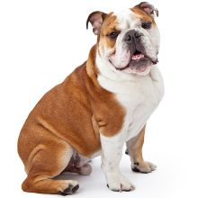
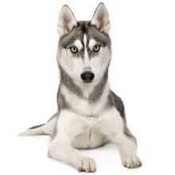
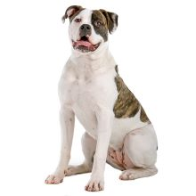
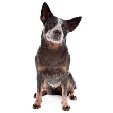
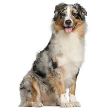
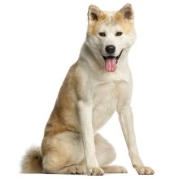
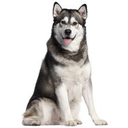

Our Services
Comprehensive Pain Control

There is a difference between experiencing pain as a human versus experiencing pain as an animal: from an evolutionary standpoint, prior to the modern age of demestication, the early ancestors of our companion animals knew that showing pain would mean being killed and eaten by predators or being ostracized from their packs. Thus, the signs of ppain in animals are very subtle, requiring trained eyes and hands to recognize and treat it.
Comprehensive Animal Surgery
We offers all surgery prcedures from the standard to more complex perations such as ophthalmic and orthopedic surgeries. Surgeries are conducted in a sterile, fully equipped, and state-of-the-art-theatre. Our highly qualified team of surgeons and nursin staff has many years of experience-both internationally and locally. Our primary focus is on safety and quality. We use modern sedatives, pain medicaion and anesthetics such as isoflurane gas to ensure the maximum comfort and safety of your pet during these procedures.
Comprehensive Animal Medical Services
From the very beginning of operations, our doctors have always sought to raise the bar on quality of veterinarian care in Sri Lanka. Our team of veterinarians combine a strong fundamental grasp of general medicine with areas of special interest. Our apporoach is to focus on obtaining accurate and actionale diagnosis which, in turn, allows us to plan the appropriate course of treatment for your pet. Specialist areas such as cardiology, dermatology, dentisity, feline medicine rquire hours of additional training. We encourages our vets to pursue their areas of interest through extensive training at local and international education centres that specialize in these areas.
Dental Services
Our team is a pioneer in animal dentistry, and have strived from the outset to highlight its importan e to overall quality of ananimal's life. We encourage our customers to bring their companion animals in for regular annual check-ups to ensure their dental health isn't ignored. Regular and proactive dental hygiene and care of animal companions can make a massive difference in ensuring strong teeth-avoiding tooth extraction procedures much later in their lives. More importantly, their quality of life will be very positive and pain free.
Laboratory Services
We state-of-the-art laboratory is operated by staff who bring over 10 years experience with animals. This ensures accurate, precise laboratory reults at all times. Our clinicians work as teams with our lab technicians to make sure these results are converted to a good diagnosis. Our vets combine understanding of lab results, with proper physical examination of pets, and transparent discussions with you, the pet owner/parent, to arrive at the correct diagnosis and course of treatment.
24 Hour Emergency Services
There is no good time for a pet to get sick, but it can be especially taxing when your animal companion has a medical emergency at night. YNG Animal Health was among the first veterinary practices to offer 24 hour emergency services, initiated 20 years ago. This service has since built up with world class best practices and protocols to accommodate the most demanding animal medical emergencies.
Pet Salon
Good grooming is just as important for your pet as it is for all of us. To make this convenient, and pleasure for your pet, our specially trained teams are available to keep your pet well groomed and looking fine at all times.
House Visits
Modern life often leads to rough and tough days for us all. Regardless we know your pet is constantly on your mind. If you need us on a busy day, our teams are happy to help you out by bringing our services to your doorstep.
In-house Pharmacy
For your convenience we will-stocked pharmacy includes animal-specific medication as well as a wide array of food for dogs and cats, including specialized diets. Our veterinary team is constantly learning about new and inovative products and we strive to obtain these, often from international suppliers because we know your pet deserves the best.
International Pet Relocation
One of the main concerns that arise when you and your family are relocating overseas is how your animal family member is going to make the journey. As part of our total care system, we provide assistance that will make this process relaxed for everyone involved.